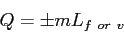
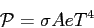
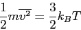

Physics 2311. Thermodynamics material
Equations for Final Exam.
Constants, such as
and
J/K, will
be provided as needed.
- 19-2
- One possible temperature conversion equation:
- 19-4
- Linear thermal expansion:
- 19-6
- Volume thermal expansion:
- 19-8
- Equation of State for an ideal gas:
Variation:
(Constant Temp. Called Boyle's Law).
- 20.4
- Heat added to a liquid or solid:
- 20.-
- Heat capacity
- 20-6
- Latent heat of fusion or vaporization:

- 20-8
- Work done on a gas.
- 20.9
- First Law of Thermodynamics.
- 20.-
- First Law applied to special gas processes.
- adiabatic
- isobaric
- isothermal
- isovolumetric
- 20.14
- Power of thermal conduction: (SKIP)
- 20.16
- Power of thermal conduction, multi-slab problems: (SKIP)
- 20.18
- Power of radiative emission: (SKIP)

- 21.2
- Pressure in terms of mean molecular kinetic energy:
- 21.4
- Mean translational KE related to temperature:

- 21.7
- Root Mean square speed:
- 21.8
- Molar specific heat of ideal gas
- Constant volume:
- Constant pressure:
- 21.10
- Total internal energy of ideal monatomic gas:
- 21.12
- Change in internal energy of ideal gas, any process:
- 21.16
- Relation between and :
- 21.18
- Adiabatic process for ideal gas:
- 22.8
- Entropy for some reversible process:
- 22.13
- Entropy for adiabatic free expansion (or isothermal expansion) :
Jason Pinkney
2011-03-25